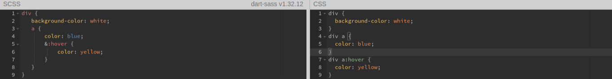

Язык Sass имеет два синтаксиса:
SASS — отличается отсутствием фигурных скобок,
в нём вложенные элементы реализованы с помощью отступов;
SCSS (Sassy CSS) — использует фигурные скобки, как и сам CSS.
Переменные
Переменные обозначаются знаком $.
Пример:
Вложенные правила
Пример:
Амперсанд
С его помощью мы указываем где должен быть вставлен родительский селектор
Пример:
Миксины (примеси)
Чтобы создать миксин, необходимо указать ключевое слово @mixin и дать ему уникальное имя. Внутри этого миксина просто записываются все необходимые правила.
Для включения миксина в селектор используется ключевое слово @include после чего указывается имя миксина, который мы хотим подключить.
Пример: